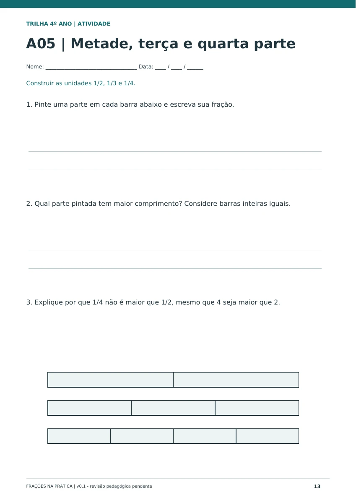
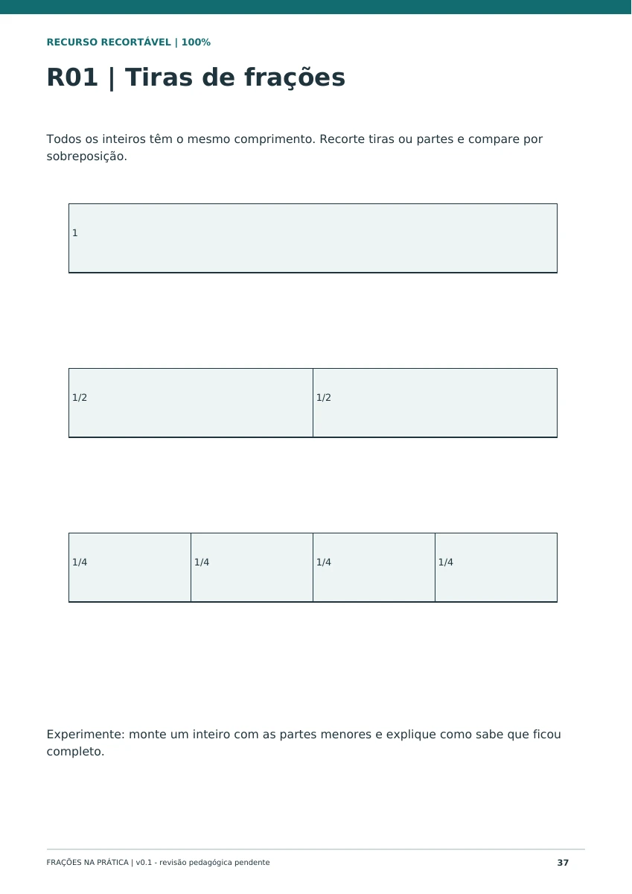
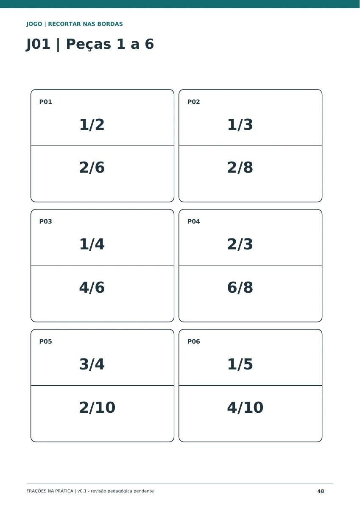
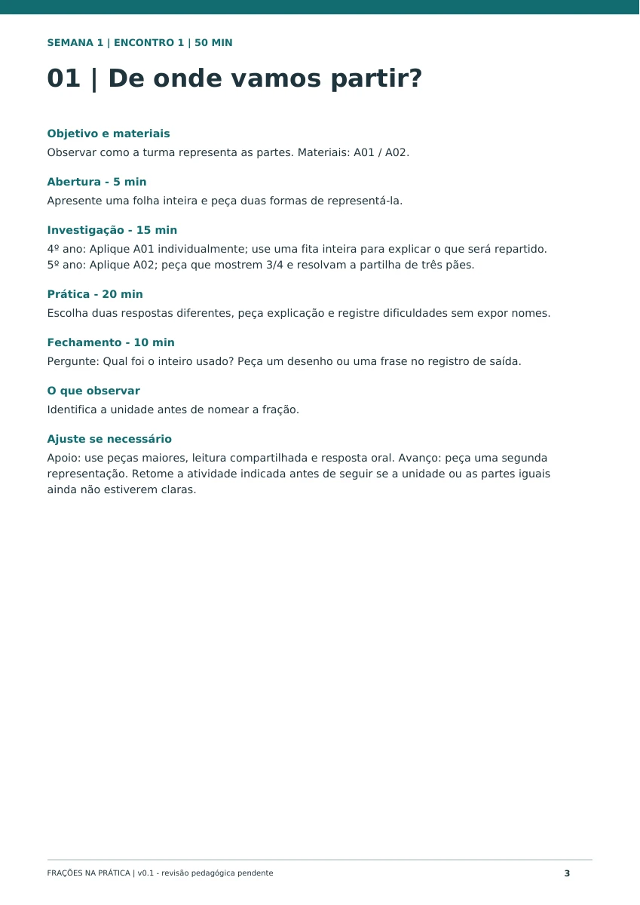

Uma sequência para avançar
Escolha entre 28 atividades progressivas conforme o momento de aprendizagem da turma.
4º E 5º ANO MATEMÁTICA NA PRÁTICA
Leve para a turma atividades, recursos visuais e jogos que tornam as frações concretas. E conte com 20 planos de aula para apoiar seu planejamento.
Kit completo + 20 planos. Apenas R$8,00 a mais que o kit.
Não foi possível iniciar. Use os controles do vídeo para tentar novamente.
Demonstração com páginas reais do material. Capas ilustrativas.
DÊ PLAY NO SEU PRÓXIMO RECURSO
Veja como o kit reúne atividades, recursos visuais e jogos — e como os planos complementam a sua preparação.
No combo, leve também 20 planos de aula.Por apenas R$8,00 a mais que o kit.
KIT FRAÇÕES NA PRÁTICA
Para professores do 4º e 5º ano, profissionais de reforço escolar e pedagogos que trabalham frações nos anos iniciais.
Escolha entre 28 atividades progressivas conforme o momento de aprendizagem da turma.
Tiras, discos, retas, malhas e cartões: 10 recursos visuais e imprimíveis para suas explicações.
4 jogos pedagógicos com orientações de uso e montagem para organizar a prática.
Gabaritos comentados e registro de acompanhamento para apoiar as retomadas.
Versão colorida, versão econômica em preto e branco e versão de consulta com duas páginas por folha. São formatos alternativos do mesmo material.
POR DENTRO DO MATERIAL
Estas são páginas reais dos PDFs. Toque em uma prévia para ampliar.

Kit base · página 13

Kit base · página 37

Kit base · página 48

NO COMBOComplemento · página 3
INCLUÍDO NO COMBO
Além do kit, receba 20 planos de aula adaptáveis ao 4º e ao 5º ano para apoiar a organização dos encontros.
Encontros 1 a 5
Encontros 6 a 10
Encontros 11 a 15
Encontros 16 a 20
Ajuste a sequência e a frequência à sua turma. São 20 planos adaptáveis às duas séries, não 40 planos independentes nem cobertura de todo o currículo mensal.
ESCOLHA COMO COMEÇAR
O kit já funciona sozinho. No combo, os planos vêm junto.
Itens comprados separadamente: R$31,89
Você economiza R$3,99 na compra conjunta.
Material digital · pagamento único
Para quem prefere organizar seu próprio planejamento.
Não inclui o PDF com os 20 planos de aula.
Quero somente o kitMaterial digital · pagamento único
Comparação: kit R$19,90 + planos avulsos R$11,99 = R$31,89.
O combo reúne os dois por R$27,90.
ANTES DE ESCOLHER
Os detalhes para escolher o material que faz sentido para você.
É um material digital em PDF. As capas são ilustrações de apresentação: não há envio de livros, peças ou outros materiais físicos. Você imprime as páginas que pretende usar.
Sim. O kit foi organizado para trabalhar frações no 4º e 5º ano do Ensino Fundamental. Selecione as atividades conforme as necessidades da turma, inclusive em aulas de reforço escolar.
O kit custa R$19,90 e inclui as atividades, os recursos, os jogos, as orientações e os gabaritos. O combo custa R$27,90 e acrescenta o PDF de 22 páginas com 20 planos de aula. A diferença é de R$8,00.
Não. O kit já inclui orientações de uso e montagem e gabaritos comentados. Os planos são um complemento para apoiar o planejamento dos encontros.
O PDF colorido, o econômico em preto e branco e o de consulta com duas páginas por folha são versões do mesmo kit. A versão de consulta é para o professor; para os recortes, use a versão colorida ou PB em tamanho real.
São 20 encontros com duração sugerida de 50 minutos, em quatro blocos de cinco. É um planejamento sugerido para quatro semanas, adaptável à rotina da turma. Não cobre todo o currículo mensal, e os planos são adaptáveis às duas séries, não 40 planos independentes.
O botão da opção escolhida leva à página de pagamento. Confira ali o produto, o valor final, as condições de pagamento e as informações de acesso antes de finalizar a compra.
{kind=link}
{kind=link}
{kind=link}
{kind=link}